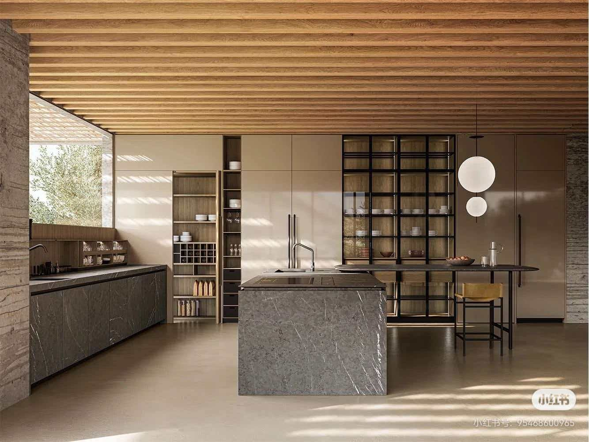

ABOUT YINO
关于壹锘
壹锘设计是一家以整体空间判断为核心的精品设计工作室。我们关注建筑、室内、功能组织、尺度秩序、材料气质与最终呈现之间的统一关系，重视空间品质、实际使用与长期完成度之间的平衡。

我们的工作方式
壹锘不以单点风格输出为目标，也不以局部效果替代整体判断。我们更重视项目的整体逻辑是否清楚、空间体验是否稳定、表达与落地是否一致。
我们不是把建筑和室内拆开处理的团队，而是从整体空间出发做统一判断。很多问题表面上看像是室内问题，实际往往和建筑条件、动线关系、尺度秩序、采光开窗与生活方式一起相关。
我们主要服务的项目
当前业务以住宅室内设计为核心，同时覆盖建筑设计与室内公共空间设计。住宅项目是最主要的服务方向，建筑与公共空间项目则根据具体需求与合作边界展开。
我们更适合什么样的客户
适合希望获得清晰整体判断、重视空间品质与完成度、愿意在前期完成充分沟通，并希望方案表达与最终落地保持一致的客户与合作方。